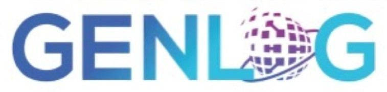
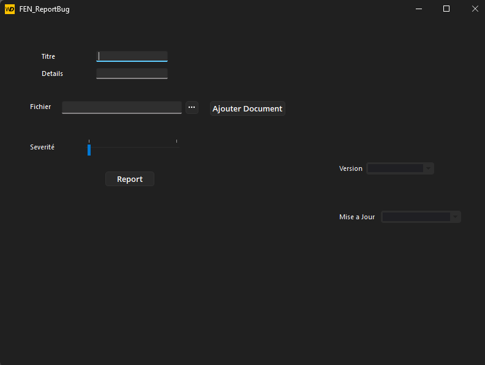
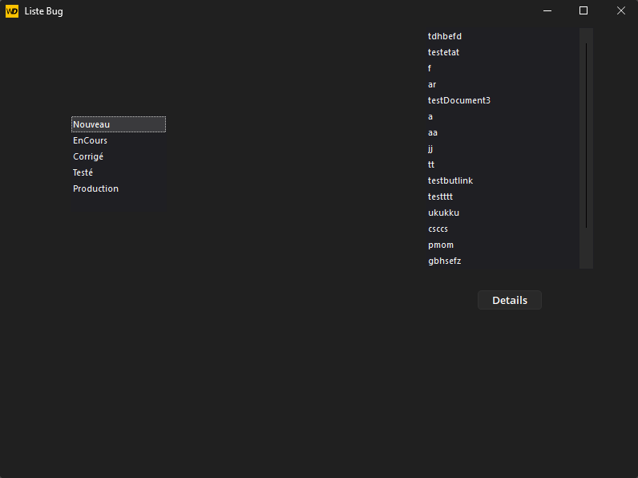

Développement d'une application de gestion de bugs avec WinDev et WinDev Mobile, lors de mon stage de deuxième année chez GenLog à Nîmes.



Mon deuxième stage s'est déroulé chez GenLog, une entreprise basée à Nîmes (Gard), durant ma deuxième année de BTS SIO SLAM. J'y ai travaillé sur le développement d'une application de gestion de bugs, outil essentiel au suivi qualité des projets de l'entreprise.
Ce stage m'a permis de découvrir l'environnement de développement WinDev et WinDev Mobile, des outils spécifiques et d'acquérir une vision concrète du cycle de développement d'une application.
Ce stage m'a confronté à un environnement de développement totalement nouveau (WinDev / WinDev Mobile), ce qui m'a obligé à monter rapidement en compétence de manière autonome. Cette capacité d'adaptation est l'une des principales leçons que je retiens de cette expérience.
Travailler sur un outil métier utilisé en interne m'a également appris l'importance de la fiabilité et de l'ergonomie d'une application : les utilisateurs finaux ne sont pas des développeurs, et chaque interface doit être pensée pour eux.